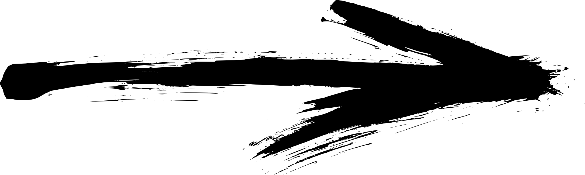
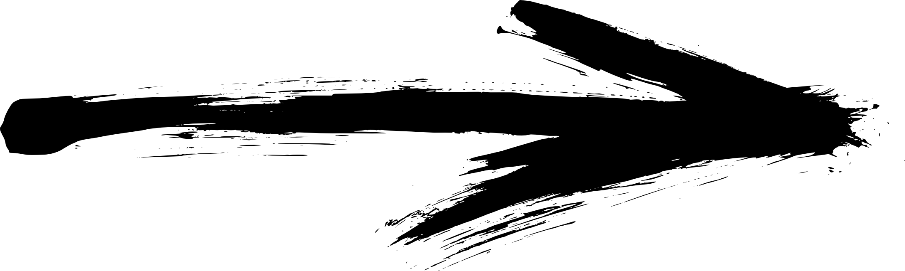

Направления работы
Набор мышечной массы
Развитие силовой выносливости
Похудение
Онлайн тренировки
Домашние тренировки
Немного обо мне
Здравствуй, меня зовут Святослав я персональный тренер. Основной акцент в своей работе я ставлю на обучение человека. Научить его правильно работать с тренажером я считаю недостаточно. В своей работе пытаюсь научить человека понимать свой организм, чтобы он знал, как работают его мышцы, где именно он должен их чувствовать, что происходит с ним, когда он отдыхает, как организм адаптируется к нагрузкам.
Мой тренировочный опыт начался ещё с 16-ти лет. Как-раз в это время я впервые попал в зал. Это был очень простой и мало оборудованный зал. Но с первого момента он меня чем-то заворожил. Постепенно я понимал, что недостаточно просто подымать тяжести чтобы прогрессировать. И тогда я начал изучать информацию по телостроительству. Читал книги и статьи, смотрел видео, экспериментировал. И со временем накопился определённый багаж знаний, которыми я делился с людьми, много кто отметил, что у меня это хорошо получается и почему бы мне не попробовать себя в роли тренера. Но владеть знаниями и учить других это не одно и тоже, понимания этого и направило меня поступить в педагогический ВУЗ.
В 2014 году я закончил Национальный педагогический университет имени М.П. Драгоманова по специальности «Педагогика высшей школы». Обучать людей мне приносит колоссальное удовольствия, наблюдать за их прогрессом, как они становятся лучше. Во всем этом я чувствую свой вклад.
Методика
Мой основной принцип в работе — это дать человеку знания, не просто тренировать его, а наполнить пониманием того что он делает. Чтобы, приходя на тренировку или находясь вне зала он понимал, что происходит в его организме и что нужно делать для достижения персонального результата. Именно в понимании ключевых элементов тренировочного процесса можно достигнуть максимальных результатов.
Что мы проходим на тренировках
 
Основы тренировочного процесса
- Техника безопасности в тренажерном зале
- Техника выполнения упражнений
- Анатомия человека в плоскости тренировочного процесса
- Биохимия в тренировочном процессе
- Биомеханика в тренировочном процессе
Питание
- Основы работы пищеварительной системы человека
- Белки. Их функции в жизни человека
- Жиры. Их функции в жизни человека
- Углеводы. Их функции в жизни человека
- Гликемический индекс (ГИ)
- Учимся самостоятельно составлять рацион питания
- Диеты
Эндокринная система человека в тренировочном процессе
- Гормон роста в тренировках и в жизни человека
- Тестостерон в тренировках и в жизни человека
- Инсулин в тренировках и в жизни человека
- Тироксин в тренировках и в жизни человека
- Эстрогены в тренировках и в жизни человека